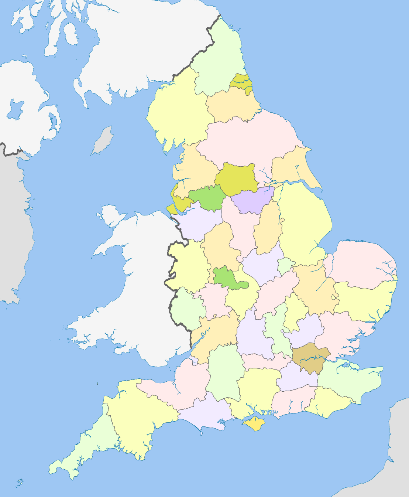

![]()
Map Colouring
Map colouring is a puzzle where you assign different colours to different features ( in this case counties ) on a map with the goal of having no 2 colours share a border. It was first introduced in 1852 to determine the minimum number of colors when trying to colour a map of England. It was postulated that 4 colours were the minimum number of colours to fill a map so that no regions sharing a common border had the same colour.
This problem is called the Four color theorem and was the first major theorem to be proved using a computer in 1976.
You can represent the map as a graph, with the counties as nodes and the borders as connections. This type of problem can be generalized and used in other problems such as scheduling, register allocation and pattern matching.
Solving
As I go through the Discrete Optimization course, I'm learning new techniques to use and get an understanding of the working space of the problem. Like the other problems in this course, this is an NP problem.
Brute force
I would start by trying every single combination and returning the best solution. Computers are great with numbers and I want to be lazy. But looking at the table above there is no way to complete this in a reasonable time.
Small Example, 20 Nodes, 3 Colours, has 3,486,784,401 possible states or 19^9. 2 seconds to solve*
Counties of England, 83 Nodes, 4 Colours, has 10^50 possible states10^36 years to solve*
*Assuming 2GHz computer, very optimistically checking 1 combination a cycle
We need another way
Pick most connected
Instead of trying every combination, lets order the way we select the nodes we colour. Starting from the node which has the most connections, choosing its colour and moving to the next, adding a new colour if neighbouring nodes used all the previous colors. This will run until all the colours are chosen
This is so much faster! It is a greedy algorithm so it doesn't give us an optimal result, but the speed is important here. When you add a new node, it adds only a small amount of time and is close to linear.
Saturation
This method is very similar to the "most connected" but in this case the next node to select will update each time. When a node is colored the connected nodes are updated with a new saturation number. This saturation number tells how many different colors a node neighbours with. The other name for this algorithm is DSATUR and is a well known algorithm for completing this problem
Next...
So far it has been interesting on how large NP problems can get and we have to try different algorithms. A good enough solution is much easier to get than a perfect solution. There is some possibility of using local search to further optimize these solutions.
Thank you for reading